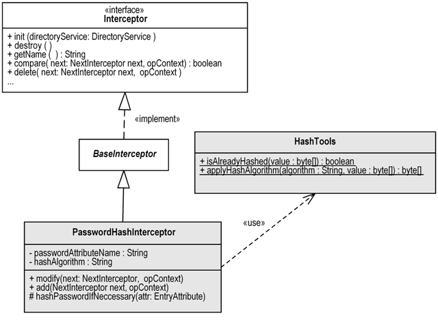
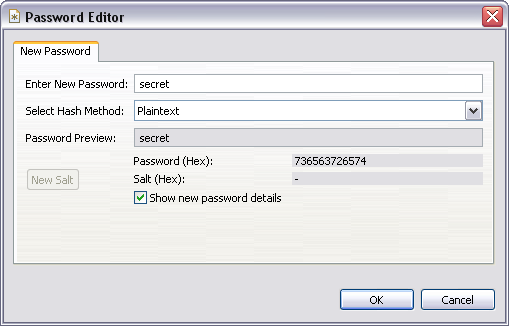
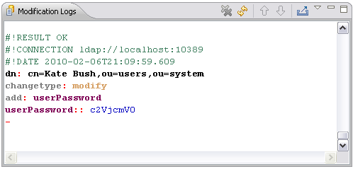
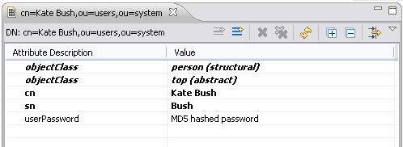

ApacheDS 2.0
Downloads
Documentation
- Basic User Guide
- Advanced User Guide
- Developer Guide
- Kerberos User Guide
- Configuration
- JavaDocs
- Cross-Reference
Support
Community
About Apache
6 - Implementing a simple custom Interceptor for ApacheDS
This site was updated for ApacheDS 2.0.
The following is for developers who plan to implement their own interceptors in order to extend or modify the functionality of Apache Directory Server. It contains a simple example as a starting point.
What exactly is an interceptor?
An interceptor filters method calls performed on on the DefaultPartitionNexus just like Servlet filters do. The ApacheDS configuration contains a chain of filters performing several tasks. In order to illustrate this, here is the list of interceptors from the default server configuration of ApacheDS 2.0
org.apache.directory.server.core.normalization.NormalizationInterceptor
org.apache.directory.server.core.authn.AuthenticationInterceptor
org.apache.directory.server.core.referral.ReferralInterceptor
org.apache.directory.server.core.authz.AciAuthorizationInterceptor
org.apache.directory.server.core.authz.DefaultAuthorizationInterceptor
org.apache.directory.server.core.exception.ExceptionInterceptor
org.apache.directory.server.core.changelog.ChangeLogInterceptor
org.apache.directory.server.core.operational.OperationalAttributeInterceptor
org.apache.directory.server.core.schema.SchemaInterceptor
org.apache.directory.server.core.subtree.SubentryInterceptor
org.apache.directory.server.core.collective.CollectiveAttributeInterceptor
org.apache.directory.server.core.event.EventInterceptor
org.apache.directory.server.core.trigger.TriggerInterceptor
org.apache.directory.server.core.journal.JournalInterceptor
Interceptors should usually pass the control of current invocation to the next interceptor by calling an appropriate method on NextInterceptor. The flow control is returned when the next interceptor’s filter method returns. You can therefore implement pre-, post-, around- invocation handler by how you place the statement.
Interceptors are a powerful way to extend and modify the server behavior. But be warned. A mistakenly written interceptor may lead to a dis-functional or corrupt server. Password hash. A simple interceptor
In order to demonstrate how to write an interceptor, here is a simple but realistic example. The following requirement should be fulfilled by an interceptor.
No user password should be stored in the directory in clear text.
To be more concrete:
If a userpassword is set by an LDAP client in plain text, a message digest algorithm should be applied to the value, and the one-way encrypted value should be stored
the algorithm should be applied if new entries are created or existing entries are modified (hence modify and add operations will be intercepted)
If the value given by the client is already provided in hashed form, nothing happens, and the given value is stored in the directory without modification
The sources
Currently, the sources are checked in here
https://svn.apache.org/repos/asf/directory/sandbox/szoerner/passwordHashInterceptor
In order to build it, simply check it out and type “mvn install”. Implementing the class PasswordHashInterceptor
The following UML class diagram depicts the structure of the little example. Classes in white are given by Apache Directory Server as extension points. The two gray classes comprise the example interceptor.

The class HashTools contains two simple methods w.r.t. hashing. isAlreadyHashed detects whether a value has already been hashed with a known message digest algorithm. applyHashAlgorithm applies a hash algorithm to a sequence of bytes. See the source code and the unit tests of this class for details, it has not that much to do with the interceptor stuff.
The central class is PasswordHashInterceptor. Every interceptor has to implement the Interceptor interface from package org.apache.directory.server.core.interceptor. PasswordHashInterceptor does so by extended the convenience class BaseInterceptor from the same package.
The property hashAlgorithm allows to configure the alhorithm used for hashing the passwords. It defaults to MD5 (Message-Digest algorithm 5). The property passwordAttributeName allows configuration of the attribute type which stores the user password. Its value will be hashed if needed. The property defaults to “userPassword”, which is quite common and used for instance in the inetOrgPerson object class.
The most interesting methods of the class are add and modify. They intercept the requests ans modify the attribute values, if needed. See below the complete source code of the class.
package org.apache.directory.samples.interceptor.pwdhash;
import static org.apache.directory.samples.interceptor.pwdhash.HashTools.applyHashAlgorithm;
import static org.apache.directory.samples.interceptor.pwdhash.HashTools.isAlreadyHashed;
import java.util.List;
import org.apache.directory.server.core.entry.ClonedServerEntry;
import org.apache.directory.server.core.interceptor.BaseInterceptor;
import org.apache.directory.server.core.interceptor.NextInterceptor;
import org.apache.directory.server.core.interceptor.context.AddOperationContext;
import org.apache.directory.server.core.interceptor.context.ModifyOperationContext;
import org.apache.directory.shared.ldap.entry.EntryAttribute;
import org.apache.directory.shared.ldap.entry.Modification;
import org.apache.directory.shared.ldap.entry.ModificationOperation;
public class PasswordHashInterceptor extends BaseInterceptor {
private String hashAlgorithm = "MD5";
private String passwordAttributeName = "userPassword";
public void setHashAlgorithm(String hashAlgorithm) {
this.hashAlgorithm = hashAlgorithm;
}
public void setPasswordAttributeName(String passwordAttributeName) {
this.passwordAttributeName = passwordAttributeName;
}
/**
* Intercepts the add operation in order to replace plain password values
* with hashed ones.
*/
@Override
public void add(NextInterceptor next, AddOperationContext opContext)
throws Exception {
ClonedServerEntry entry = opContext.getEntry();
EntryAttribute attribute = entry.get(passwordAttributeName);
if (attribute != null) {
hashPasswordIfNeccessary(attribute);
}
super.add(next, opContext);
}
/**
* Intercepts the modify operation in order to replace plain password values
* with hashed ones.
*/
@Override
public void modify(NextInterceptor next, ModifyOperationContext opContext)
throws Exception {
List<Modification> items = opContext.getModItems();
for (Modification modification : items) {
ModificationOperation operation = modification.getOperation();
if (operation == ModificationOperation.ADD_ATTRIBUTE
|| operation == ModificationOperation.REPLACE_ATTRIBUTE) {
EntryAttribute attribute = modification.getAttribute();
if (attribute.getId().equalsIgnoreCase(passwordAttributeName)) {
hashPasswordIfNeccessary(attribute);
}
}
}
super.modify(next, opContext);
}
protected void hashPasswordIfNeccessary(EntryAttribute attribute) {
try {
byte[] password = attribute.getBytes();
if (!isAlreadyHashed(password)) {
byte[] hashed = applyHashAlgorithm(hashAlgorithm, password);
attribute.clear();
attribute.add(hashed);
}
} catch (Exception e) {
throw new RuntimeException("Password hash failed", e);
}
}
}
Using the interceptor
You may use a custom interceptor both in a standard ApacheDS installation and in a server started embedded. Adding it to a standard server installation (server.xml)
In order to get the interceptor installed in a default installation of ApacheDS 1.5.5., just copy the jar-File resulting from the Maven build, which contains the custom classes, to APACHEDS_INSTALLDIR/lib/ext.
After that, add the interceptor to the server.xml file in APACHEDS_INSTALLDIR/conf/. Make sure to backup the file before your modifications. Within server.xml find the XML elements which list the interceptors. The easiest way to add a custom interceptor is to add a spring bean (namespace “s”). You mya set configuration properties to the interceptor as well, if it supports some.
The following fragment shows the interceptor list with the example interceptor added just behind normalization. For demonstration purposes, the hash algorithm is set to “MD5” (which is the default of our interceptor anyway).
...
<interceptors>
<normalizationInterceptor/>
<s:bean class="org.apache.directory.samples.interceptor.pwdhash.PasswordHashInterceptor">
<s:property name="hashAlgorithm" value="MD5" />
</s:bean>
<authenticationInterceptor/>
<referralInterceptor/>
<aciAuthorizationInterceptor/>
<defaultAuthorizationInterceptor/>
<exceptionInterceptor/>
<operationalAttributeInterceptor/>
...
</interceptors>
...
Embedded mode
As an alternative, the following Java code starts an ApacheDS embedded in a main method. The list of interceptors is complemented with the example interceptor. We insert it exactly behind the NormalizingInterceptor (the position is a little bit tricky to determine).
package org.apache.directory.samples.interceptor.pwdhash;
import java.util.List;
import org.apache.directory.server.core.DefaultDirectoryService;
import org.apache.directory.server.core.DirectoryService;
import org.apache.directory.server.core.interceptor.Interceptor;
import org.apache.directory.server.core.normalization.NormalizationInterceptor;
import org.apache.directory.server.ldap.LdapServer;
import org.apache.directory.server.protocol.shared.transport.TcpTransport;
/**
* Main class which starts an embedded server with the interceptor inserted into
* the chain.
*/
public class Main {
public static void main(String[] args) throws Exception {
DirectoryService directoryService = new DefaultDirectoryService();
directoryService.setShutdownHookEnabled(true);
List<Interceptor> interceptors = directoryService.getInterceptors();
// Find Normalization interceptor in chain
int insertionPosition = -1;
for (int pos = 0; pos < interceptors.size(); ++pos) {
Interceptor interceptor = interceptors.get(pos);
if (interceptor instanceof NormalizationInterceptor) {
insertionPosition = pos;
}
}
// insert our new interceptor just behind
interceptors.add(insertionPosition + 1, new PasswordHashInterceptor());
directoryService.setInterceptors(interceptors);
LdapServer ldapServer = new LdapServer();
ldapServer.setDirectoryService(directoryService);
ldapServer.setAllowAnonymousAccess(true);
TcpTransport ldapTransport = new TcpTransport(10389);
ldapServer.setTransports(ldapTransport);
directoryService.startup();
ldapServer.start();
}
}
Verification
Let’s check whether our new interceptor does its job! In order to do so, we use Apache Directory Studio and connect to the server with the interceptor enabled (see above).
First we create a new entry with the following data, using “New Entry …” within Studio.
dn: cn=Kate Bush,ou=users,ou=system
objectClass: person
objectClass: top
cn: Kate Bush
sn: Bush
Then we add a new attribute userPassword in the entry editor. For the value, a special editor appears:

Select “Plaintext” as the hash method and enter a new password. We selected “secret” (see screen shot above). After pressing OK, a modify operation is sent to the server, which will be intercepted by our example class.

After that, the value for userPassword is not “secret”, but the MD5 digested value of it.

The user Kate Bush is still capable of authenticating with the password “secret”, because Apache Directory Server supports authentication with passwords hashed with this algorithm. You can verify this by connecting with Studio and the using “cn=Kate Bush,ou=users,ou=system” as bind DN.
Here it is demonstrated with the help of the ldapsearch command line tool. The result also shows that the userPassword value is hashed with MD5.
$ ldapsearch -h localhost -p 10389 -D "cn=Kate Bush,ou=users,ou=system" \\
-w secret -b "ou=users,ou=system" -s one "(objectClass=*)"
version: 1
dn: cn=Kate Bush,ou=users,ou=system
objectClass: person
objectClass: top
cn: Kate Bush
sn: Bush
userPassword: {MD5}Xr4ilOzQ4PCOq3aQ0qbuaQ==
$
Limitations of the example
This example is intended as a demonstration, on how to write your custom interceptor. Don’t consider it bullet proof. It has not been tested under production conditions, etc.
At least the following limitation should be mentioned
The default hash algorithm MD5 is considered weak.
Exception handling is poor. E.g. if someone configures an unsupported hash algorithm, the interceptor fails to create an appropriate LDAP error.
If a multivalued password attribute is used, the interceptor will simply ignore that fact (does not apply to userPassword as of RFC 2256).
Further reading
Learn more about interceptors in ApacheDS Architecture Documentation, check out the source code of some implementations of the Interceptor interface, and/or read the javadoc comments.